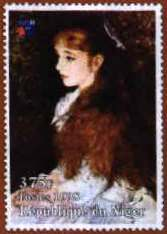
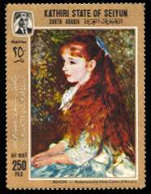
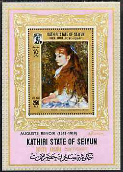

| Revised:
02/11/01
. Copyright © 2000 - 2011 by Victor Manta, Switzerland and 1999-2011 by Dr. Claude Wainstein, France. All rights reserved worldwide. |
|
|
|
 |
 |
|
| Mademoiselle | ||
| Irène Cahen d'Anvers, | ||
| by Auguste Renoir | ||
The page of Dr. Claude Wainstain, France
Mademoiselle Irène Cahen d’Anvers
Il est des tableaux au destin rocambolesque, tel La Joconde, volée vingt fois, vingt fois retrouvée, tailladée au couteau puis réparée, aujourd’hui emprisonnée sous un blindage de verre ; ou paradoxal, comme les Tournesols de Van Gogh, achetés une bouchée de pain par un ami du peintre et revendus cent ans plus tard des dizaines de millions de dollars. Et il en est dont le destin est une tragédie.
C’est le cas de ce portrait de Mademoiselle Irène Cahen d’Anvers, peint par Renoir en 1880, aujourd’hui unanimement reconnu comme un pur chef-d’œuvre. Traduisant avec délicatesse la rêverie mélancolique d’une jeune fille, ses grands yeux ingénus, sa chevelure rousse déployée sur le dos et ses mains sagement posées sur les genoux - « peu d’œuvres ont réussi comme celle-ci à capter tout ce qui nous demeure inaccessible du monde intérieur d’un enfant », écrit à son propos Pierre Assouline -, ce tableau n’eut pourtant pas une vie facile. Dès sa conception, l’œuvre déplaît fortement à la famille Cahen d’Anvers, et plus encore à la jeune Irène, qui déteste ce portrait d’elle-même et le détestera toute sa vie. Le chef-d’œuvre, comble d’infamie, sera relégué dans un placard, avant d’être recueilli, en 1910, par la propre fille d’Irène, Béatrice.

Trois décennies plus tard, la guerre s’abat sur les Cahen d’Anvers et les nazis raflent familles et tableaux. Le portrait de Mademoiselle Irène Cahen d’Anvers, dont la valeur, entre-temps, est devenue inestimable, tombe entre les mains de Goering, qui le cède à un certain Georg Bührle, riche industriel suisse d’origine allemande, pourvoyeur d’armes lourdes pour la Wermacht et gros acheteur de tableaux volés. Mais à la Libération, Irène Cahen d’Anvers, ex-de Camondo et désormais comtesse de Sampieri, découvre dans une liste d’objets d’art pillés la trace de son Renoir, et entreprend de le récupérer. La spoliation est manifeste, pour un tableau aussi connu et maintes fois exposé, et dont les légitimes propriétaires, Béatrice et Léon Reinach, ont disparu dans les camps. Aussi Irène récupère-t-elle son tableau, mais c’est pour s’apercevoir qu’il lui déplaît toujours autant.
Pauvre Renoir ! Rarement œuvre fut plus haïe par son modèle ! En 1949, elle le met en vente dans une galerie parisienne. Un amateur, aussitôt, s’en porte acquéreur. C’est… Georg Bührle. Le portrait reprend le chemin de la Suisse, en toute légalité cette fois, et c’est ainsi qu’il se trouve aujourd’hui à Zurich, à la Fondation Bührle, accroché peut-être à côté d’autres toiles volées à d’autres Juifs. N’ayant aucune envie de visiter la Fondation Bührle, je préfère contempler Mademoiselle Irène Cahen d’Anvers dans sa version philatélique, sur un timbre du Seyun de 1967 et un autre du Niger, tout récent celui-là et dont la mise en circulation a bien surpris Erika Lindt, la directrice de la Fondation Bührle : « Normalement, s’étonne-t-elle, on s’adresse à la Fondation pour obtenir le permis de reproduction, permis qui est remis contre le paiement d’une taxe fixée par le Conseil de la Fondation.. » La Fondation Bührle spoliée par le Niger ! Mais c’est qu’elle est morale, cette histoire ! • Claude Wainstain
Chronique publiée dans L’Arche 493/mars 1999
Notice: Due to different problems that appeared after the publishing of Claude's article, the Nigerian stamp displayed above was declared as non-official by the Nigerian postal administration. We show it on this page only for its historical interest, but you are warned in what concerns its authenticity! V.M.
Links:
| Revised:
02/11/01
. Copyright © 2000 - 2011 by Victor Manta, Switzerland and 1999-2011 by Dr. Claude Wainstein, France. All rights reserved worldwide. |
|
|